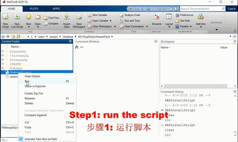

1. Installation Method¶
1.1. Installation Package Acquisition¶
(1). Send Email to rflysim@163.com to inquiry and buy the desired version, you will obtain an installation package and an activation code. (2). Use MATLAB to enter the folder of the installation package, and run “OnekeyScript” to input your activation code as shown below.
Fig. 4.1 RflySim registration dialog
(3). Then， click the “OK” button, and all tools and apps of RflySim platform will be installed automatically.
Fig. 4.2 One-key installation and configuration
1.2. Product Price List¶
You can read our latest document about the advanced features of RflySim platform: https://flyeval.com/doc/Lesson_13_RflySim_Platform_Advanced_Features.pdf
Please Contact with rflysim@163.com for Price.
1.3. Effect after Installation¶
You will obtain the following shortcuts on Desktop, where Python38Env is a Python environment for vison/OpenCV development, RflySim3D is our latest UE4-based 3D environment simulation program, HITLRun is an one-key script for hardware-in-the-loop simulation of multiple vehicles, and SITLRun is an one-key script for Software-in-the-loop simulation of multiple vehicles.
These software tools along with other program installed into the system play important role in accelerate the development efficiency of control systems. Their relationships and using phase are presented in the following figure.
Among all apps, the CopterSim is the core software for RlfySim platform. The complete UI of CopterSim after registration is mainly divided into five parts. The box (a) of the figure below is the interface for configuring the multicopter model and flight environment parameters, where readers can select propulsion system components to assemble different types of multicopters for subsequent simulations. Box (b) is the model parameter calculation and database management interface, which is mainly used to calculate the model parameters of the assembled multicopter and store the results into the database for subsequent use with convenient database management functions. Box (c) is the advanced function area, including swarm simulation, UE4 scene selection, and other functions, which will be described in detail later. Box (d) is mainly used to connect the Pixhawk autopilot and control the start and stop of the simulation. Box (e) is used to display the real-time message received from the Pixhawk autopilot as well as the position and attitude information of the simulated vehicle model.

Fig. 4.3 CopterSim interface after registration
1.4. Custom Multicopter Configuration¶
In the first line of the model configuration interface shown in Fig.4.3a, the configurable parameters include basic information such as the total weight, diagonal size, and flight altitude. In the second to the fifth rows of Fig.4.3a, readers can select the propulsion system components or parameters for the multicopter components, such as motors, propellers, ESCs, and batteries. CopterSim offers two options for selecting propulsion components. As shown in Fig.4.4, the first is to assemble a multicopter directly from the propulsion system branded model database which covers many common products on the market.
Fig. 4.4 Custom model parameter input interface
Since the propulsion system product database is difficult to cover all of the products in the world, CopterSim also provides a function to customize the component parameters which enables a more flexible way to configure a multicopter model. As shown in Fig.4.4a, click on the “Custom Design” option at the end of the first line to enter the component custom parameter interface shown in Fig.4.4b. In this interface, readers can customize the detailed parameters of motors (KV value, no-load voltage, internal resistance), ESCs, batteries, and propellers. In theory, by using the “Custom Design” function, readers can simulate any propulsion system components, even products that do not exist on the market.
After a multicopter model is configured, clicking on the “Calculate” button in Fig.4.3b will automatically analyze the feasibility of the inputted multicopter configuration. Unpractical multicopter configurations may cause simulation failures, such as insufficient thrust to take off, ESC and motor overheat due to excessive battery voltage, or the propeller size is too large for the fuselage. As shown in Fig.4.5, after checking the inputted multicopter configuration, CopterSim will prompt a warning dialog if the configuration is unpractical, and the reader needs to re-select a practicable multicopter configuration.
Fig. 4.5 Model configuration feasibility detection warning dialog
For beginners or readers who are not familiar with multicopter design, it is a difficult task to configure a multicopter that can work. So CopterSim also provides a convenient function to directly select vehicle configurations through a prepared model database. As shown in Fig.4.6, in the drop-down list of the “Model Database” item, the reader can select a usable multicopter configuration (or modify parameters based on it) to quickly obtain the multicopter model for simulations.

Fig. 4.6 Multicopter model selection from model database
After configuring a multicopter through the three methods mentioned above, clicking the “Add to Database” button shown in Fig.4.6 will store the new model into the model database for use in the future. Readers can also delete the current model from the database by clicking the “Delete from Database” button shown in Fig.4.6.
1.5. Set Initial States¶
As shown in Fig.4.3c, CopterSim provides an interface to modify the multicopter initial position and altitude. As shown in Fig.4.7, readers can enter the “x” and “y” coordinates (unit: m) of the multicopter and the value of the yaw angle (unit: degree), where the x-direction and y-direction point to the front and right of the multicopter, and the yaw angle is positive when rotating to right side.

Fig. 4.7 Setting initial simulation position